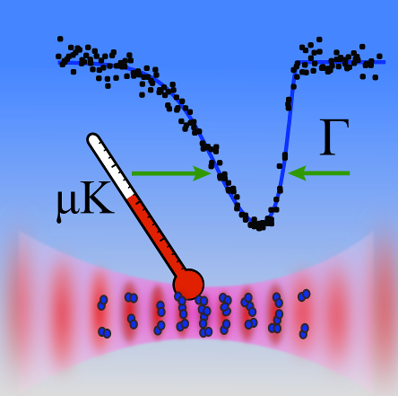
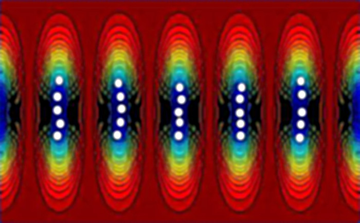
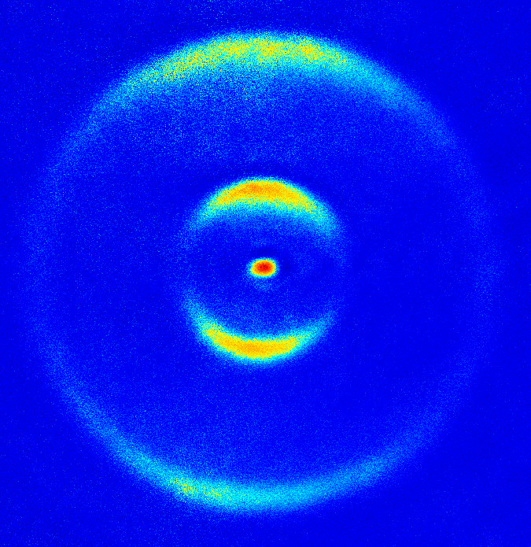
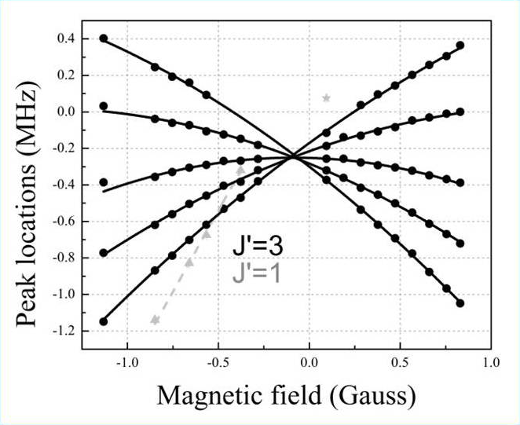
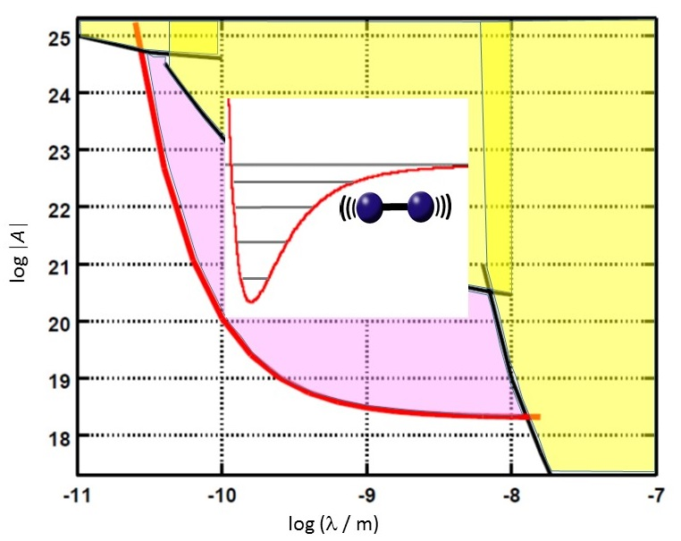
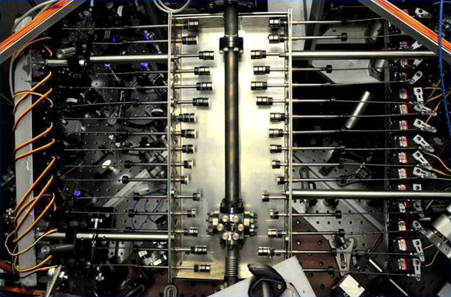

Doppler Cooling near the Absolute Zero

The first step of the molecular clock experiment is to use lasers to cool down a cloud of atoms.
While lasers carry energy and can deposit heat, they can also remove energy and thus refrigerate matter.
At ZLab, we use light to slow and cool
approximately a million strontium atoms to a temperature that is 300 million times colder than room temperature, in a
fraction of a second. This method of laser cooling is known as Doppler cooling. The Doppler shift - a
phenomenon where laser light appears slightly more blue if one is moving toward it - helps ensure that warm atoms
interact more strongly with the portion of the light that forces them to slow down, effectively lowering the temperature of
the cloud. We measure the ultralow temperatures very precisely while holding the atoms in an 'optical lattice' trap.
Optical Lattice

When the atoms are cooled near absolute zero, they get trapped in an interference pattern of light.
This trap is called an optical lattice due to its perfectly crystal-like pattern. When the trap light is shined along one
direction, the lattice sites are flat as pancakes. Along the short dimension of the pancakes, the atoms
experience minimal motion. We choose this direction for manipulating and measuring their properties, to maximize the degree of precision
and control.
Creating and Imaging Ultracold Molecules in the Lattice

When the atoms are confined in lattice sites, additional lasers are used to bond them into diatomic molecules.
The resulting molecules are at nearly the same ultracold temperature as the initial atoms. This is because the
absorbed and emitted photons have slightly different colors (and therefore energies), to account for the binding energy of the molecule.
Most atoms are converted to molecules on the millisecond time scale. Then any remaining atoms are cleared
away, and experiments can be performed with purely molecular clouds.
Another light pulse can split the molecules back into atoms that could
be imaged directly. The lower-energy atoms stay in the lattice, and the higher-energy atoms fly away with
angular patterns determined by the molecular quantum state.
High-Precision Molecular Quantum Optics

Strontium molecules in an optical lattice are a very interesting system, partly due to the molecules' ultracold
temperature and tight confinement, and partly due to the ability to flip their electronic spins with a laser
photon which results in a highly precise spectroscopic tool. This setup is rich in
possibilities for testing many ideas and models of basic molecular physics.
For example, we have observed and explained a dramatic
enhancement of the magnetic susceptibility in these molecules, that is exhibited
as strong curving of energy shifts in a magnetic field. We have also created rare, deeply subradiant states of the
molecules which do not emit light due to quantum mechanical symmetry. The very long
lifetimes of these elusive states allowed us to study asymptotic physics of the atom-molecule threshold.
Fascinating physics also occurs when the molecular bond is optically broken in a controlled way, shedding light on
chemistry in the fully quantum regime.
Fundamental Science with Ultracold Diatomic Molecules

Simple, isolated, and controlled molecules provide a window into many scientific questions.
Such molecules can be symbolically visualized as spheres connected by springs, where in our case the two spheres are
strontium atoms
and the spring represents the electromagnetic interaction that binds them. A molecular quantum clock,
a device that precisely measures the vibrations of this spring, can be used not only to check
time measurements by atomic clocks, but to learn whether fundamental parameters such as the electron-to-proton
mass ratio slowly change as our universe evolves. Because strontium has several spinless isotopes with different masses, it might even be
possible to check if any yet unknown forces -
besides electromagnetism and Newtonian gravity - modify the vibrations of the spring at the nanometer length scale, signaling new physics
beyond the Standard Model.
Equipment

At ZLab, we use innovative techniques to construct efficient and 'cool' experiments. For example,
the pictured atom slower has small permanent magnets actuated by hobby-style motors. A genetic
algorithm can optimize the position of each motor in real time, to accommodate the properties of
different types of atoms. Many other features make it fun to work at ZLab. We have a frequency
comb, or a 'rainbow laser', that can coherently connect electromagnetic waves ranging from
the radio frequencies to the visible range! Students who work here learn a great variety of lab
techniques including vacuum systems, mechanical design and construction, lasers, optics, and quantum physics & chemistry.